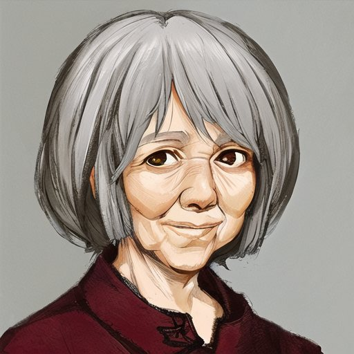
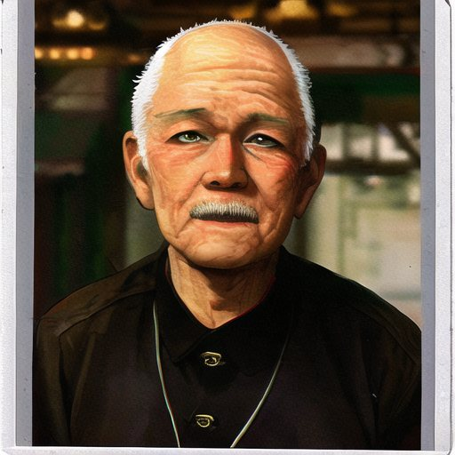
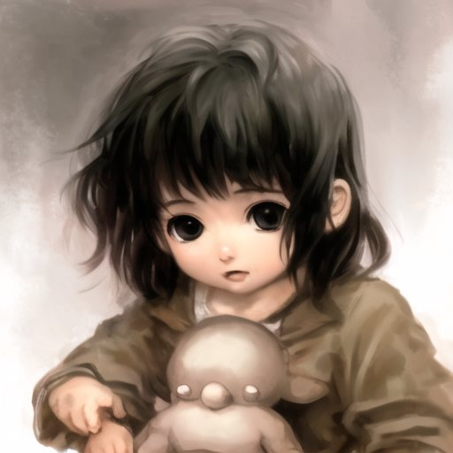
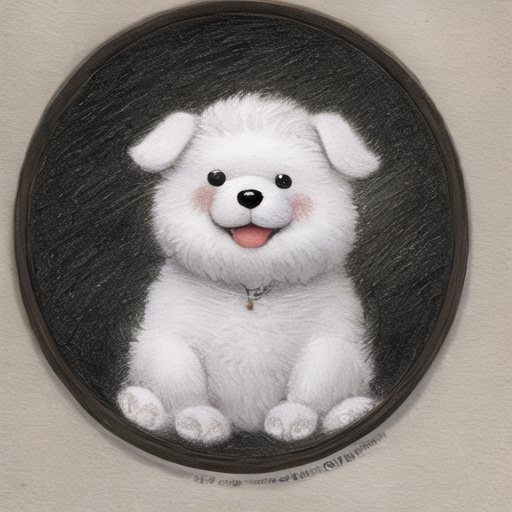

2024 · game design · team of 2
Burning memories
A narrative card game about Alzheimer's disease. The world is black and white; anything in colour is a memory slipping out of place.
Design documents and boards, not a shipped game.
Core idea
The world is broken. You are looking for the other half.
- Explore: walk the map and find broken objects. Pair two halves to recover a whole one.
- Anomalies: grey is normal; colour, or anything that breaks common sense, is an anomaly.
- Hallucinations: touching an anomaly cuts to a hallucination world, where the card game happens.
- Main quest: “find the other half”, of an object, and of a person.
Four design boards, 310 nodes in total: game flow, card-battle framework, characters, scenes.
People · two timelines
The same family, now and before.




AI-assisted concept references from the character board. Hover or focus to restore colour.
Card system
Hold memories long enough to make sense of them.
Four kinds of card
Whole, broken, joint and ash. Broken cards need their other half; ash cards are what is left after burning.
Burning
Every new memory pushes older ones out: the hand holds fewer cards over time, and each draw burns more of them.
Pills
Playing ash cards earns pills. Pills of different quality slow the burn by different amounts.
Goal
Line up a run of fragments, like a tarot spread telling a story. The true sequence and a false “montage” are both possible.
Influences: Gwent and Inscryption for the duel; a roguelike blackjack game for setting a clear goal first.
Try it · a toy version of the loop
Draw fragments. Make a run of three before they burn.
Written for this page to show the rule, not the game itself. You can hold 5 fragments, one fewer every 2 draws; anything over the limit burns at random. A pill skips the next burn.
Process
What designing it taught me
- Set the goal before the mechanics. The first chapter stalled until we decided what “winning” a memory meant; then every card rule had something to serve.
- Theme in the rules, not just the art. Forgetting is the burn timer; denial is the false montage sequence.
- Scope: two inexperienced people with spare time only, so we planned chapter by chapter, starting with the one whose boss fight was clearest.